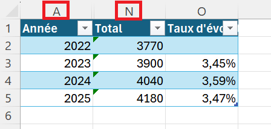

Partie 6 - Organiser l’affichage
Méthode : Masquer des lignes ou des colonnes
Positionnez le curseur de votre souris au dessus de la colonne à masquer (partie classée dans l’ordre alphabétique), une flèche noire apparait ⬇ :
faites un clic gauche et glissez latéralement en maintenant l’appui afin de sélectionner d’autres colonnes que vous auriez à masquer ;
puis faites un clic droit, un menu contextuel apparaît et cliquez sur Masquer.
Les colonnes sont masquées, mais ne sont pas supprimées, ce qui permet de faire des opérations sans tenir compte de ces cellules.
D’ailleurs si vous regardez attentivement l’image ci-dessous, vous constatez que nous passons de la colonne A, à la colonne N, les colonnes B à M étant masquées.

Le processus est le même, lorsqu’il s’agit de lignes, il suffit juste de positionner son curseur à gauche des lignes concernées (partie numérotée)
Méthode : Démasquer des lignes ou des colonnes
Positionner son curseur au dessus de la colonne A, puis faites un clic gauche et tout en maintenant le clic, glissez latéralement pour sélectionner la zone jusqu’à la colonne N. Relâchez et faites un clic droit sur la zone pour faire apparaitre le menu contextuel et cliquez sur Afficher. Les colonnes réapparaissent.
Remarque : Notion importante en entreprise
Permet de maquer des éléments pour permettre une meilleure lisibilité pour un supérieur ou un client.